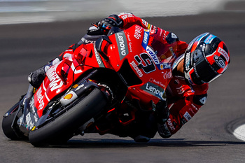
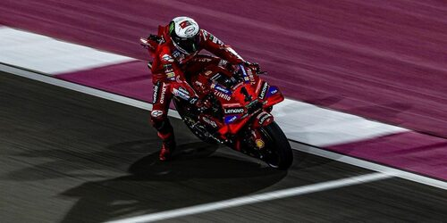

-La participación de Ducati en la MotoGP comenzó en 2003, después de años de éxito en las carreras de Superbike. Con el compromiso de producir motos de alto rendimiento, Ducati entró en la clase reina del motociclismo mundial, la MotoGP, con la innovadora Desmosedici.
- Taglioni fué el encargado de diseñar máquinas para ganar en los circuitos, que es donde las marcas crecían y batían a las rivales.
Por primera vez en su historia de MotoGP, Ducati gana su segundo título mundial de pilotos consecutivo con Francesco Bagnaia.
Por cuarto año consecutivo y quinto en su historia en MotoGP, Ducati ha ganado el Campeonato del Mundo de Constructores en la categoría reina al sumar 700 puntos, 327 más que el segundo clasificado.
 